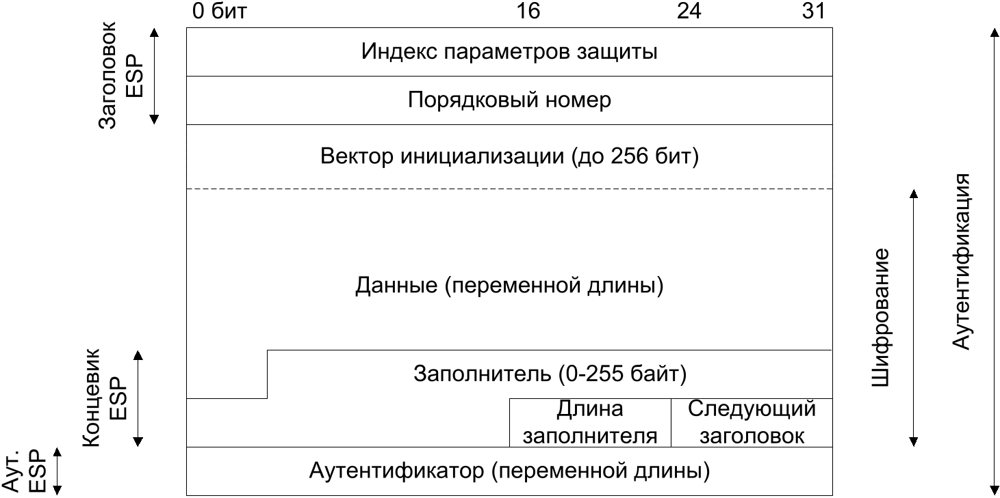
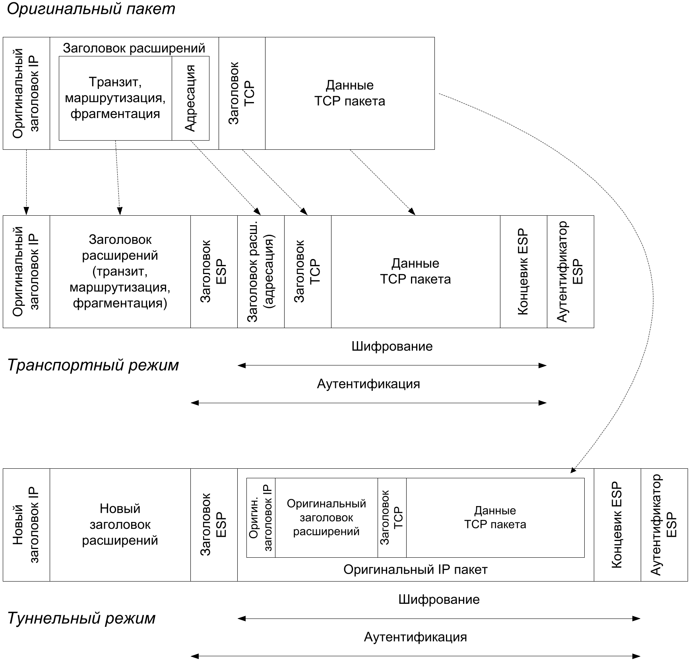
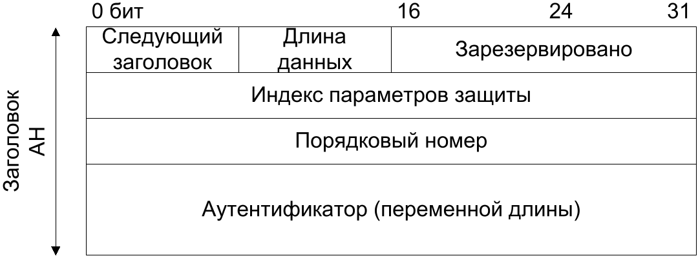
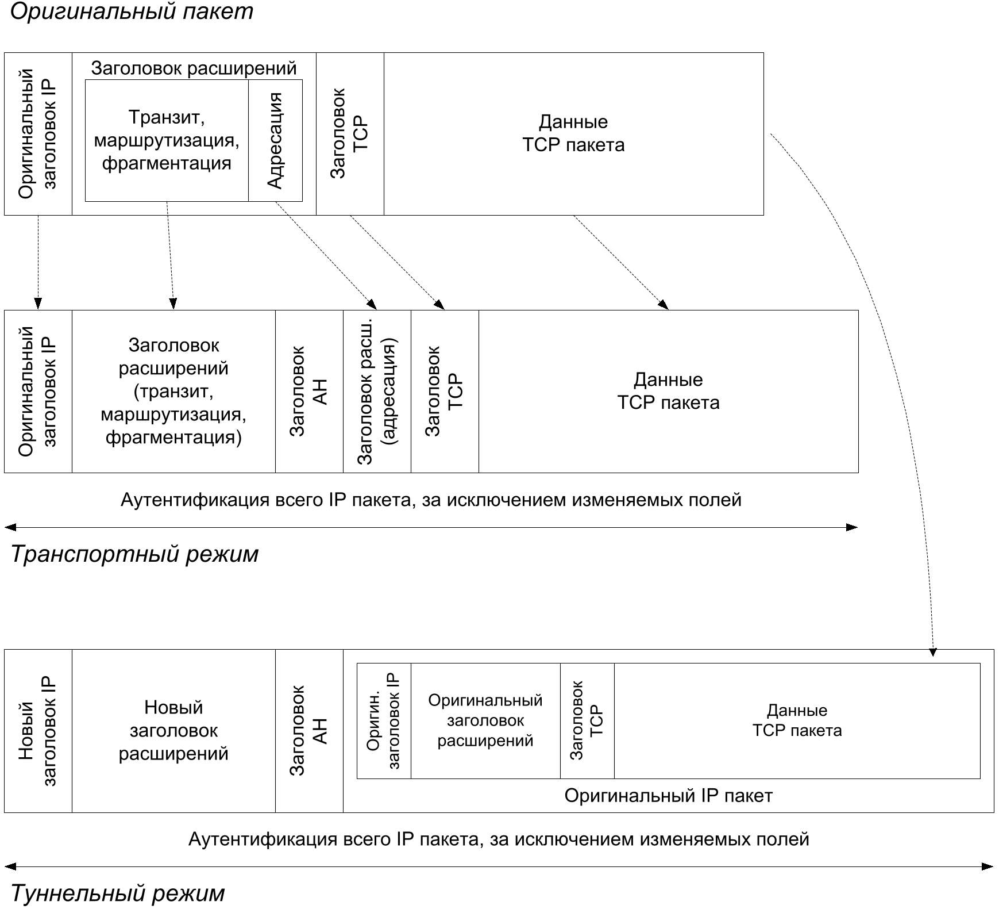

Набор протоколов IPsec (англ. Internet Protocol Security)[54] является неотъемлемой частью IPv6 и дополнительным необязательным расширением IPv4. IPsec обеспечивает защиту данных на сетевом уровне IP-пакетов.
IPsec определяет:
первичную аутентификацию сторон и управление сеансовыми ключами (протокол IKE, англ. Internet Key Exchange);
шифрование с аутентификацией (протокол ESP, англ. Encapsulating Security Payload);
только аутентификацию сообщений (протокол AH, англ. Authentication Header).
Основное (современное) применение этих протоколов состоит в построении VPN (Virtual Private Network – виртуальная частная сеть) при использовании IPsec в так называемом туннельном режиме.
Аутентификация в режимах ESP и AH определяется по-разному. Аутентификация в ESP гарантирует целостность только зашифрованных полезных данных (пакетов следующего уровня после IP). Аутентификация AH гарантирует целостность всего IP-пакета (за исключением полей, изменяемых в процессе передачи пакета по сети).
13.4.1. Протокол создания ключей IKE
Протокол IKE версии 2 (англ. Internet Key Exchange)[53], по существу, можно описать следующим образом. Пусть $I$ – инициатор соединения, $R$ – отвечающая сторона.
Протокол состоит из двух фаз. Первая фаза очень похожа на установление соединения в SSL/TLS: она включает возможный обмен сертификатами $C_I, C_R$ стандарта X.509 для аутентификации (или альтернативную аутентификацию по общему заранее созданному секретному ключу) и создание общих предварительных сеансовых ключей протокола IKE по протоколу Диффи—Хеллмана. Сеансовые ключи протокола IKE служат для шифрования и аутентификации сообщений второй фазы. Вторая фаза создаёт сеансовые ключи для протоколов ESP, AH, то есть ключи для шифрования конечных данных. Сообщения второй фазы также используются для смены ранее созданных сеансовых ключей, и в этом случае протокол сразу начинается со второй фазы с применением ранее созданных сеансовых ключей протокола IKE.
Создание предварительной защищённой связи для протокола IKE и аутентификация сторон.
$I \leftarrow R$: $\left(g^{x_R}\right.$, одноразовая метка $N_R$, идентификаторы выбранных алгоритмов, запрос сертификата $C_I\left.\right)$.
Протокол Диффи—Хеллмана оперирует с генератором $g=2$ в группе ${{\mathbb{Z}}}_p^*$ для одного из двух фиксированных $p$ длиной 768 или 1024 бита. После обмена элементами $g^{x_I}$ и $g^{x_R}$ обе стороны обладают общим секретом $g^{x_I x_R}$.
Одноразовые метки $N_I, N_R$ созданы криптографическим генератором псевдослучайных чисел $PRF$.
После данного сообщения стороны договорились об используемых алгоритмах и создали общие сеансовые ключи:
где $Ka_I, Ka_R$ – ключи кода аутентификации для связи в обоих направлениях, $Ke_I, Ke_R$ – ключи шифрования сообщений для двух направлений, $K_d$ – инициирующее значение генератора $PRF$ для создания сеансовых ключей окончательной защищённой связи, функцией $PRF(x)$ обозначается выход генератора с инициализирующим значением $x$.
При дальнейшем обмене данными сообщения шифруются алгоритмом AES в режиме CBC со случайно выбранным инициализирующим вектором $IV$ на сеансовых ключах $Ke$ и аутентифицируются имитовставкой на ключах $Ka$. Введём обозначения для шифрования сообщения $m$ со сцеплением блоков $E_{Ke_X}(m)$, и совместного шифрования, и добавления кода аутентификации сообщений $\langle m \rangle_X$ для исходящих данных от стороны $X$:
$I \rightarrow R$: $\langle ID_I, ~ C_I, ~\text{запрос сертификата}~ C_R, ~ ID_R, ~ A_I \rangle_I$.
По значениям идентификаторов $ID_I, ID_R$ сторона $R$ проверяет знание стороной $I$ ключей $Ke, Ka$.
Поле $A_I$ обеспечивает аутентификацию стороны $I$ стороне $R$ одним из двух способов. Если используются сертификаты, то $I$ показывает, что обладает закрытым ключом, парным открытому ключу сертификата $C_I$, подписывая сообщение $\textrm{data}$:
$$ A_I = \textrm{ЭП}(\textrm{data}). $$
Сторона $R$ также проверяет сертификат $C_I$ по цепочке до доверенного сертификата верхнего уровня.
Второй вариант аутентификации – по общему секретному симметричному ключу аутентификации $K_{IR}$, который заранее был создан $I$ и $R$, как в Kerberos. Сторона $I$ показывает, что знает общий секрет, вычисляя
$$ A_I = \textrm{PRF}( \textrm{PRF}(K_{IR}, ~ \text{текст ''Key Pad for IKEv2''}), \textrm{data}). $$
Сторона $R$ сравнивает присланное значение $A_I$ с вычисленным и убеждается, что $I$ знает общий секрет.
Сообщение $data$ – это открытое сообщение данной транзакции, за исключением нескольких полей.
$I \leftarrow R$: $\langle ID_R, ~ C_R, ~ A_R \rangle_R$.
Производится аутентификация стороны $R$ стороной $I$ аналогичным образом.
Создание защищённой связи для протоколов ESP, AH, то есть ключей шифрования и кодов аутентификации конечных полезных данных. Фаза повторяет первые две транзакции первой фазы с созданием ключей по одноразовой метке $N'$ и протоколу Диффи—Хеллмана с закрытыми ключами $x'$.
По окончании второй фазы обе стороны имеют общие секретные ключи $Ke, Ka$ для шифрования и коды аутентификации в двух направлениях, от стороны $I$ и от стороны $R$:
Итогом работы протокола IKE является набор сеансовых ключей для шифрования $Ke'_I, ~ Ke'_R$ и кодов аутентификации $Ka'_I, ~ Ka'_R$ в протоколах ESP и AH.
13.4.2. Таблица защищённых связей
Защищённая связь (англ. Security Association, SA) является однонаправленной от отправителя к получателю и характеризуется тремя основными параметрами:
индексом параметров защиты – уникальным 32-битовым числом, входящим в заголовок ESP- и AH-пакетов;
IP-адресом стороны-отправителя;
идентификатором применения ESP- или AH-протокола.
Защищённые связи хранятся в таблице защищённых связей со следующими полями:
счётчик порядкового номера, входит в заголовок ESP- и AH-пакетов;
окно защиты от воспроизведения – скользящий буфер порядковых номеров пакетов для защиты от пропуска и повтора пакетов;
информация протокола ESP и AH – алгоритмы, ключи, время действия ключей;
режим протокола: транспортный или туннельный.
По индексу параметров защиты, находящемуся в заголовке ESP- и AH-пакетов, получатель из таблицы защищённых связей извлекает параметры (названия алгоритмов, ключи ит. д.), производит проверки счётчиков, аутентифицирует и расшифровывает вложенные данные для принятого IP-пакета.
Протоколы ESP и AH можно применять к IP-пакету в трёх вариантах:
только ESP-протокол;
только AH-протокол;
последовательное применение ESP- и AH-протоколов.
Подчеркнём, что только AH-протокол гарантирует целостность всего IP-пакета, поэтому для организации виртуальной сети VPN, как правило, применяется третий вариант (последовательно ESP- и AH-протоколы).
13.4.3. Транспортный и туннельный режимы
Протоколы ESP, AH могут применяться в транспортном режиме, когда исходный IP-пакет расширяется заголовками и концевиками протоколов ESP, AH, или в туннельном режиме, когда весь IP-пакет вкладывается в новый IP-пакет, который включает заголовки и концевики ESP, AH.
Новый IP-пакет в туннельном режиме может иметь другие IP-адреса, отличные от оригинальных. Именно это свойство используется для построения виртуальных частных сетей (англ. Virtual Private Network, VPN). IP-адресом нового пакета является IP-адрес IPsec-шлюза виртуальной сети. IP-адрес вложенного пакета является локальным адресом виртуальной сети. IPsec-шлюз производит преобразование IPsec-пакетов в обычные IP-пакеты виртуальной сети и наоборот.
Схемы транспортного и туннельного режимов показаны ниже отдельно для ESP- и AH-протоколов.
13.4.4. Протокол шифрования и аутентификации ESP
Протокол ESP определяет шифрование и аутентификацию вложенных в IP-пакет сообщений в формате, показанном на рис.13.3.
Рис. 13.3 — Формат ESP-пакета
Шифрование вложенных данных производится в режиме CBC алгоритмом AES на ключе $Ke'$ с псевдослучайным вектором инициализации IV, вставленным перед зашифрованными данными.
Аутентификатор сообщения определяется как усечённое до 96 бит значение ${\textrm{HMAC}}(Ka', m)$, вычисленное стандартным способом.
На рис.13.4 показано применение протокола в транспортном и туннельном режимах.
Рис. 13.4 — Применение ESP протокола к пакету IPv6
13.4.5. Протокол аутентификации AH
Протокол AH определяет аутентификацию всего IP-пакета в формате, показанном на рис.13.5.
Рис. 13.5 — Заголовок AH пакета
Аутентификатор сообщения определяется так же, как и в протоколе ESP – усечённое до 96 бит значение ${\textrm{HMAC}}(Ka', m)$, вычисленное стандартным способом.
На рис.13.6 показано применение протокола в транспортном и туннельном режимах.
Рис. 13.6 — Применение протокола AH к пакету IPv6